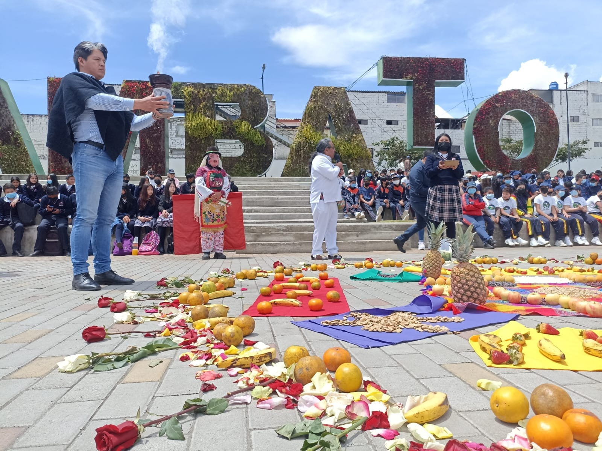
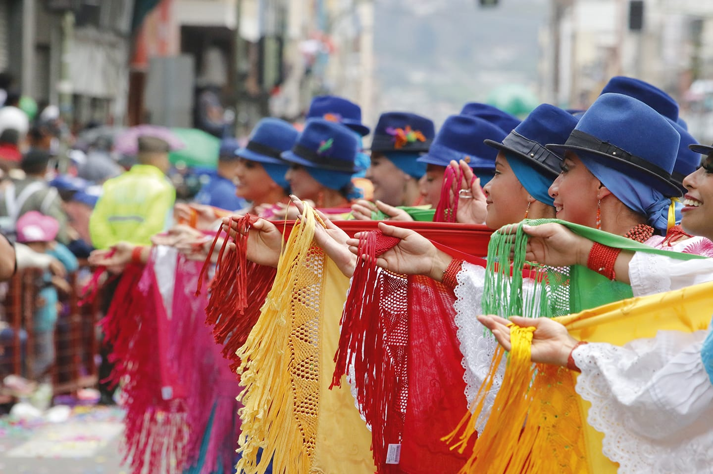
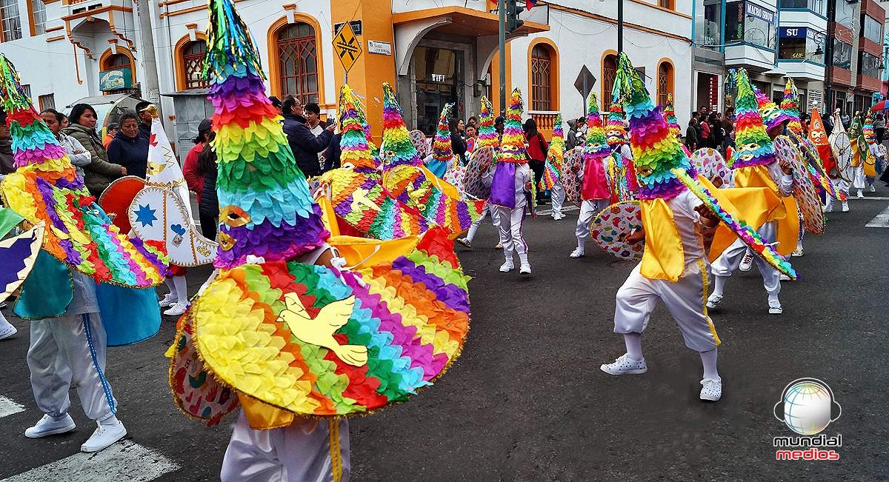
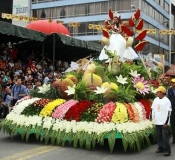
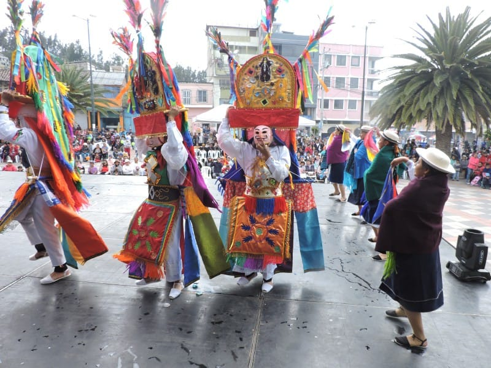
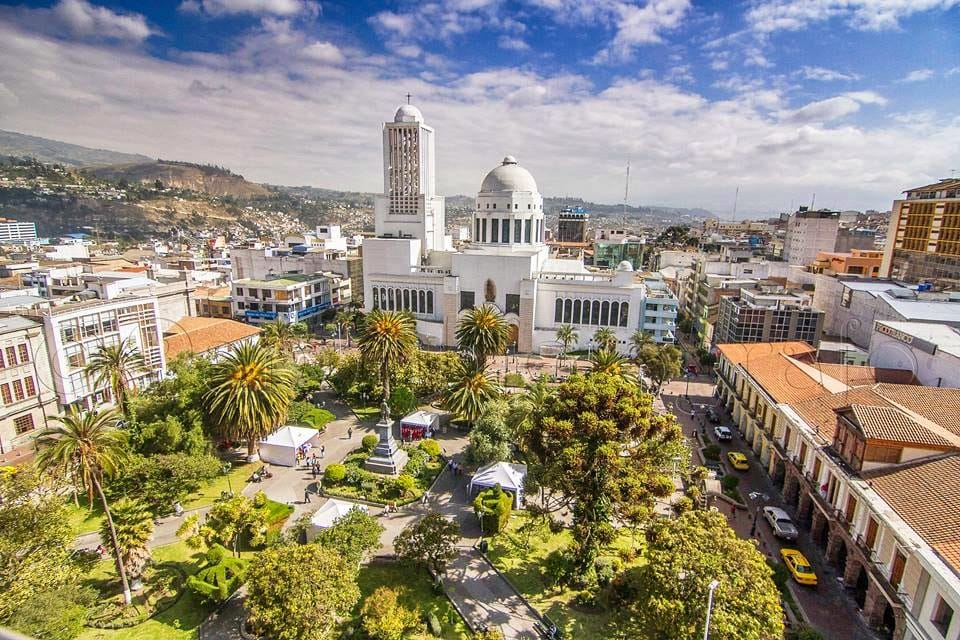

COSTUMBRES DE AMBATO
🌸 1. Fiesta de la Fruta y de las Flores
Descripción: Es la celebración más importante de Ambato. Se realiza en febrero durante el Carnaval.
Costumbres:
- Desfiles con carros alegóricos decorados con frutas y flores.
- Bailes folclóricos y comparsas.
- Festivales musicales, exposiciones y ferias artesanales.
- Se evita el juego con agua (a diferencia del resto del país).
🍽 2. Gastronomía típica
Platos tradicionales:
- Llapingachos: tortillas de papa con queso, servidas con chorizo, huevo y aguacate.
- Cuy asado: acompañado de papas y ají.
- Pan de Pinllo y colada morada (especialmente en noviembre).
- Mote, hornado y fritada en ferias y fiestas.
🎭 3. Tradiciones religiosas y culturales
- Semana Santa: Se organizan procesiones y actos religiosos.
- Fiestas patronales: En honor a santos como San Juan Bautista o la Virgen del Rosario.
- Misas y romerías: En comunidades rurales cercanas.
🧵 4. Artesanía y producción local
- Ambato es conocida como la “Tierra de los tres Juanes” por su aporte cultural.
- Producción de calzado, textiles, flores y frutas.
- Costumbre de visitar ferias los fines de semana para comprar productos artesanales.
🏞 5. Visitas familiares y paseos
- Es común que las familias ambateñas realicen paseos al campo, como al Parque Provincial de la Familia o a lugares como Atocha o Ficoa.
- Se acostumbra compartir comida en familia los domingos.





